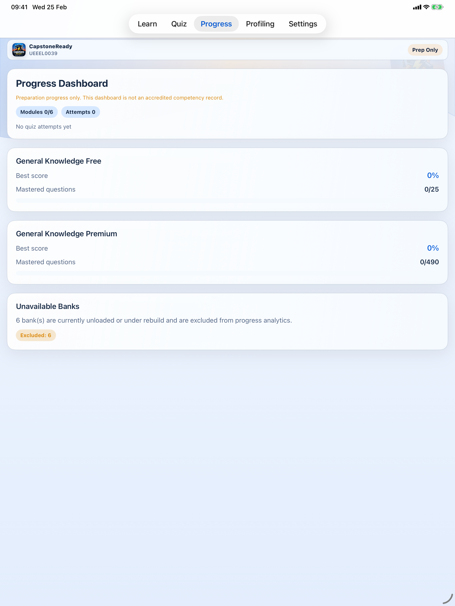

Employer-linked approvals reduce back-and-forth
Where employer-linked workflow is enabled, the product helps keep review, sign-off, and support clearer and easier to follow.
The employer side of CapstoneReady is about cleaner visibility, smoother profile review, and fewer avoidable handoff problems. It is not positioned as a replacement for formal supervision, training-provider processes, or regulatory obligations.



The product can support readiness conversations, reviews, and handoffs while leaving training, licensing, and workplace obligations where they belong.
The product direction already includes linked approvals, profile handling, and better readiness visibility. The public site now describes that clearly without overclaiming.
Where employer-linked workflow is enabled, the product helps keep review, sign-off, and support clearer and easier to follow.
The aim is to make readiness conversations more grounded by showing the current workflow state rather than leaving the apprentice and employer guessing.
Employer obligations, site safety responsibilities, and provider or licensing decisions remain outside the control of the app.
CapstoneReady helps organise the flow around profile cards, evidence, approvals, and progress signals so the conversation can focus on readiness instead of reconstructing what happened.
Where approvals are used, the platform supports the workflow from record preparation through to the final output and legal links.
Support and privacy routes are not hidden. The public website includes the legal centre and regional support contacts to make escalation simpler.
The app supports record clarity and review flow, but it does not replace formal employer supervision or training-provider obligations.